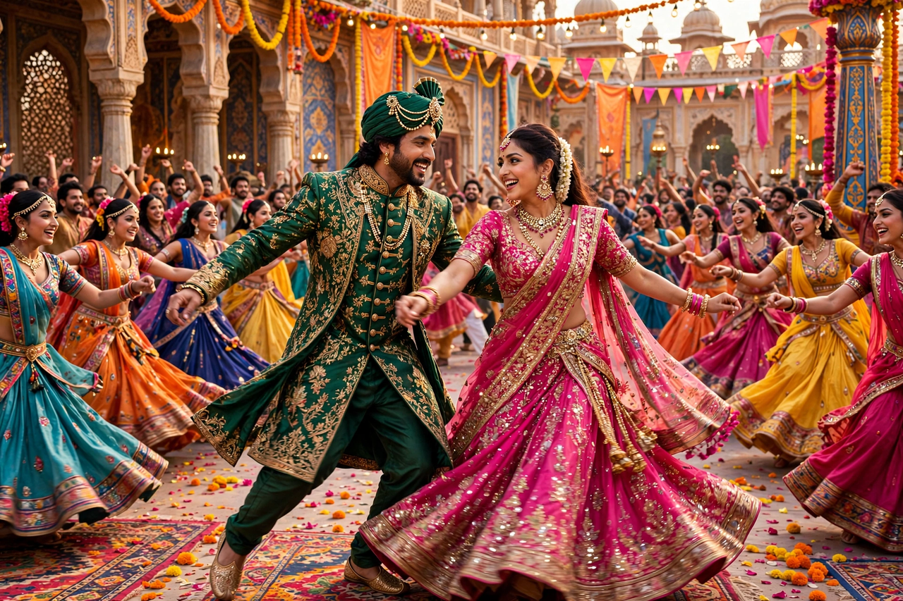

| Bollywood | |
|---|---|
| Location | Mumbai, Maharashtra, India |
| Language | Hindi (with Hindustani dialogue) |
| Origin of name | Portmanteau of "Bombay" and "Hollywood" |
| First sound film | Alam Ara (1931) |
| Major stars | Amitabh Bachchan, Shah Rukh Khan, Aamir Khan, Salman Khan, Deepika Padukone |
Bollywood is the informal term for the Hindi-language film industry based in Mumbai (formerly Bombay), Maharashtra. It is the largest of the various film industries of India by output and global reach. The name is a portmanteau of "Bombay" and "Hollywood". Bollywood films are known for their music and dance sequences, melodrama, and lengths often exceeding two and a half hours.
Indian cinema began with Dadasaheb Phalke's Raja Harishchandra (1913). The first Hindi talkie, Alam Ara (1931), established the formula of songs integrated into narrative. The post-independence "golden age" of the 1950s produced classics by Raj Kapoor, Guru Dutt, and Mehboob Khan, including Mother India (1957), nominated for an Academy Award. The 1970s brought the "masala film" mixing action, romance, comedy, and music, and the superstardom of Amitabh Bachchan as the "angry young man".
From the 1990s, family romances such as Dilwale Dulhania Le Jayenge (1995) opened vast overseas markets among the Indian diaspora, and stars like Shah Rukh Khan became global figures. In the 21st century the industry corporatised, embraced multiplex releases and streaming, and produced internationally successful films such as Dangal (2016), one of the highest-grossing non-English films ever.
Mainstream Bollywood films typically interweave multiple genres, feature playback-sung musical numbers choreographed with large ensembles, and include an interval. Music rights and soundtracks are central to a film's marketing and revenue.